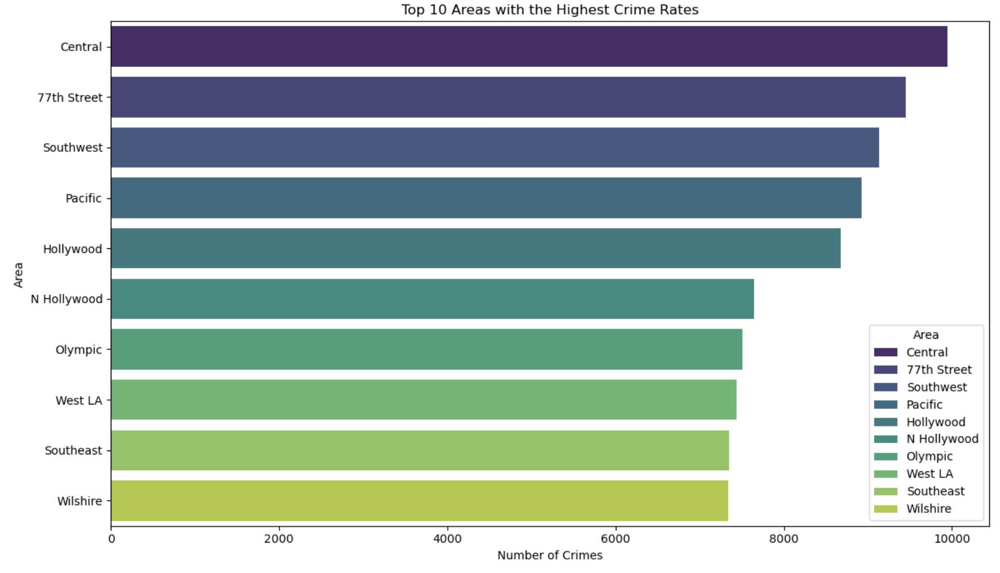

Los Angeles Crime Case Analysis

Project Summary
This project involved a full-cycle data science analysis of the Los Angeles crime dataset, aiming to predict whether a case would be solved.
Key Steps Included:
-
Data Cleaning and Preparation
- Handled missing values, removed duplicates, and corrected inconsistencies.
- Normalized categorical variables and merged additional information from crime and weapon lookup files.
-
Exploratory Data Analysis (EDA)
- Examined distributions, correlations, and summary statistics.
- Analyzed temporal trends and spatial patterns across districts.
- Investigated solve rates by feature to identify influential factors.
-
Visualization
- Created interpretable charts such as bar plots, heatmaps, and feature importance graphs to support analysis.
-
Feature Engineering
- Derived new features and encoded categorical variables to enhance model performance.
-
Modeling and Evaluation
- Built classification models (Logistic Regression, Random Forest) to predict case solvability.
- Applied train-test splits, preprocessing, and hyperparameter tuning.
- Evaluated models using metrics including accuracy, precision, recall, F1-score, and AUC-ROC.
-
Key Insights
- Victim demographics (ethnicity, age, gender) strongly influence case resolution.
- Random Forest outperformed Logistic Regression with 77% accuracy and AUC-ROC of 0.82.
- Case resolution rates are higher in specific districts, hours, and for certain crime types.
- Spatial and temporal trends provide actionable guidance for resource allocation and operational planning.
-
Business Impact
- Identified key factors affecting case solvability to inform policing strategies.
- Highlighted districts and times requiring increased attention or resources.
- Provided data-driven recommendations to improve crime resolution efficiency.
This project demonstrates practical skills in Python programming, data analysis, machine learning, and data visualization, delivering actionable insights from complex crime data.

Crime distribution by district

Feature importance chart